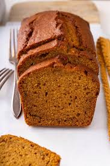

Homepage
Pumpkin Bread

Summary
Ingredients
- 1/2 cup vegetable oil
- 1 ¾ cups granulated sugar
- 2 cups all-purpose flour
- 1 tablespoon
- 1 teaspoon baking soda
- 1/2 teaspoon salt
- 15 oz can pumpkin puréeDo not subsitue with pie filling or mix
Directions
- Preheat the oven to 325F. Grease and flour two 8 x 4-inch loaf pans.
- In a large bowl, whisk oil and sugar together. Mixture will look like wet sand.
Whisk in eggs ,flour, pumpkin pie spice, baking soda, baking powder, and salt until just combined.
Overmixing the bread will cause it to be tough.
- Divide the batter evenly between the prepared pans.Bake for 40-60 minutes.Let the loaves cool in the pans for 10 minutes